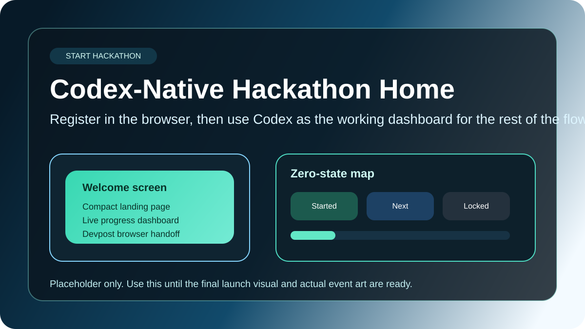

Devpost x Codex
Build, prepare, and submit with less tab-hopping.
This proof tests whether a Codex plugin can use a rich HTML surface for branded guidance, progress, learning paths, and handoffs while still preserving the compact chat flow.

Step 1
Welcome and registration
Use branded event art and a very clear Devpost registration handoff before the Codex-native flow begins.
Optional
Guided planning track
Offer a learner-friendly planning path after resources, then return to submission prep with a real project plan.
Final
Submission readiness
Run the final checklist, add a minimal secrets scan, and prepare the browser handoff without claiming automatic submission.